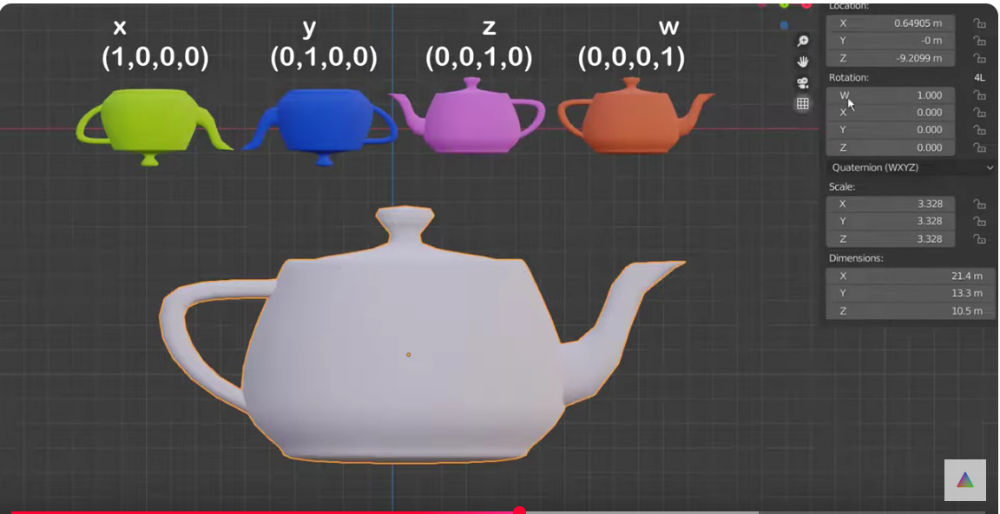
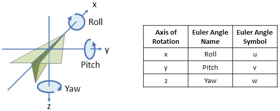
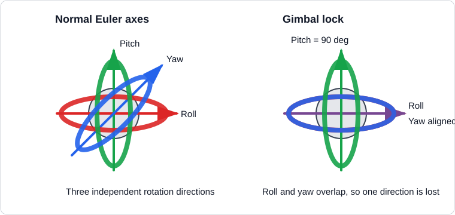
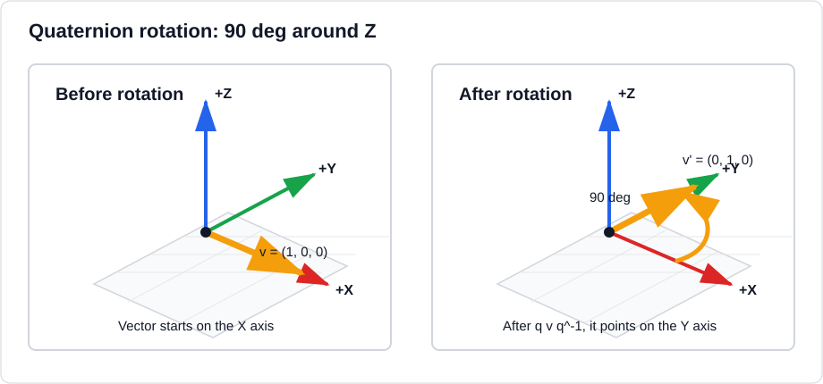

Quaternion
Quaternions are an alternate way to describe orientation or rotations in 3D space using an ordered set of four numbers. They have the ability to uniquely describe any three-dimensional rotation about an arbitrary axis and do not suffer from gimbal lock

Euler angels
Euler angles describe a 3D orientation as three ordered rotations around axes. A common order is:
- Roll: rotate around
X - Pitch: rotate around
Y - Yaw: rotate around
Z
The important detail is that the order matters. roll -> pitch -> yaw is
not always the same result as yaw -> pitch -> roll.

Gimbal lock
Gimbal lock happens when two rotation axes become aligned, so one degree of
freedom is lost. With Euler angles this can happen when the pitch reaches
90 deg.

Short example:
At pitch = 90 deg, changing roll and changing yaw can produce the same kind
of movement. The system can no longer clearly represent all three independent
rotations. This is one reason robotics, graphics, and 3D engines often use
quaternions internally.
Quaternion idea
- Instead of Euler saying "Rotate X, then Y, then Z"
- a quaternion says "Rotate by θ degrees around this axis."
Example: rotate 90 deg around Z
Start with a vector that points on the X axis:
Rotate it 90 deg around the Z axis:
The quaternion for an axis-angle rotation is:
Where:
a = (a_x, a_y, a_z) is the rotation axis. It should be a unit vector,
meaning its length is 1:
For example, the Z axis is already a unit vector:
So the compact form is:
For 90 deg around Z:
To rotate a vector with a quaternion, first write the vector as a pure
quaternion. A pure quaternion has w = 0:
Here we use the order (w, x, y, z).
The rotation formula is:
Because this is a unit quaternion, the inverse is:
Now multiply in two steps:
Then multiply by the inverse:
Drop the w part and keep only (x, y, z):
So:
How to multiply two quaternions
Use the same order everywhere. In this page the order is (w, x, y, z).
For:
The multiplication is:
Example from the 90 deg Z rotation:
Then multiply by the inverse:
Drop w, so the rotated vector is (0, 1, 0).
The vector that pointed along X now points along Y.

Interactive 3D demo
This example embeds a small Three.js scene in the markdown page. Use the sliders to change roll, pitch, and yaw.
The blue arrow is the forward direction. The orange wing and green up marker show why direction alone is not enough for full 3D orientation: after pitch and yaw aim the vector, roll still controls which side of the body is up.
The embedded page is a normal HTML file:
Quaternion
Unit quaternion
A unit quaternion like unit vector is simply a vector with length (magnitude) equal to 1, but pointing in the same direction as the original vector.
quaternion: \(\(q = w + xi + yj + zk\)\)
as a vector \(\(q = (w, x, y, z)\)\)
calc the norm \(\(\|q\| = \sqrt{w^2 + x^2 + y^2 + z^2}\)\)
calc unit quaternion \(\(q_{unit} = \frac{q}{\|q\|} = \left(\frac{w}{\|q\|}, \frac{x}{\|q\|}, \frac{y}{\|q\|}, \frac{z}{\|q\|}\right)\)\)
code example
Conjugate
A quaternion is:
The conjugate is:
flip the signs of x, y, z, keep w the same.
Inverse
unit quaternion
If q is a unit quaternion (∥q∥=1), then the conjugate is also the inverse.
when not unit length
Multiple
by vector
we treat the vector as pure quaternion
Numpy Example
by quaternion
Quaternion multiplication is used to combine rotations in 3D space
Warning